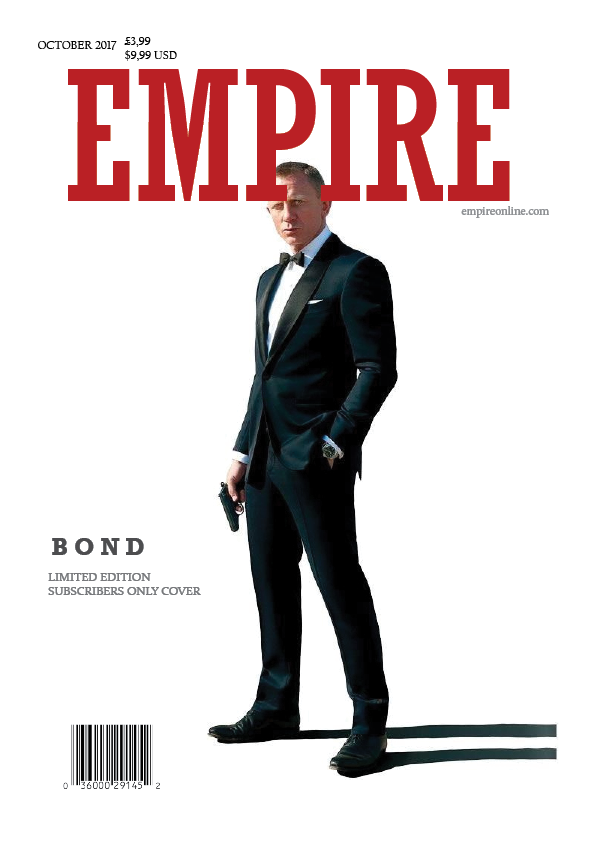
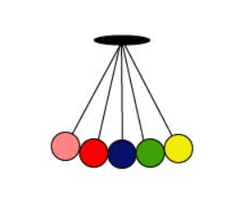

Home
Portfolio
Contact
PORTFOLIO

Upload: 19/12-2017, Dennis Jensen
Upload: 19/12-2017, Dennis Jensen
Upload: 19/12-2017, Dennis Jensen

Click to play animation
Upload: 19/12-2017, Dennis Jensen
Upload: 19/12-2017, Dennis Jensen